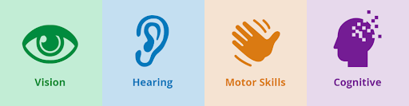
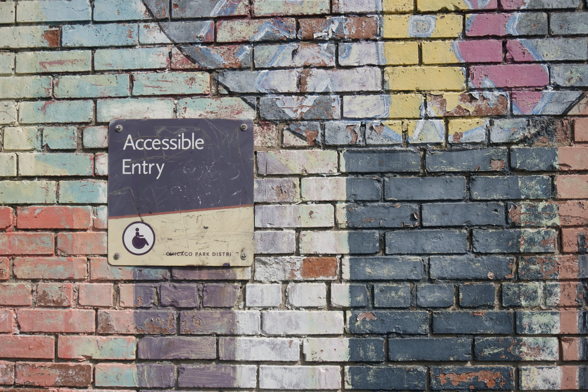

På den här webbplatsen hittar du information om tillgänglighet på webben. Informationen riktar sig
främst
till dig som är webbdesigner eller webbutvecklare.

Vad betyder begreppet tillgänglighet?
Tillgänglighet menas med att samhället bör utformas på ett sätt som gör att alla individer
oberoende
av förutsättningar ska kunna vara delaktiga. Det innebär att miljö och produkter alltid bör
designas med ett tillgänglighetsperspektiv för att alla individer ska kunna inkluderas.
Vad är tillgänglighet på webben?
Tillgänglighet på webben innebär att webbsidor bör utvecklas och designas på ett sätt som gör att
så många individer som möjligt kan ta del av webbens information och tjänster.

5 konkreta exempel på hur du som webbdesigner skapar en tillgänglig design:
Använd text och inte bilder för att visa text.
Erbjud andra alternativ om en inspelning enbart består av ljud eller video.
Innehållet bör presenteras i en meningsfull ordning för alla användare.
Innehåll kan presenteras på ett sätt som användaren känner igen. Exempelvis med text och
symbol.
Använd tillräcklig kontrast mellan text och bakgrund.
5 konkreta exempel på hur du som utvecklare skapar tillgänglig kod:
Skriv semantisk HTML så att elementen kan bli uttnyttjade som de är tänkta. Till exempel
skriv den översta rubriken med h1-taggen.
Skriv HTML-elementen i en meningsfull ordning och så att den fungerar lika bra med liten
skärm
eller skärmläsare.
Märk upp formulärfält med label-taggar som anger vilken typ av innehåll som förväntas.
HTML-koden bör ange aktuellt språk genom att använda lang-attribut.